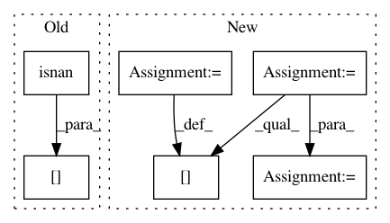

2526879b1f941c887eeb24a267b5ea010e20d5d7,PyNomaly/loop.py,LocalOutlierProbability,_ssd,#LocalOutlierProbability#Any#,137
Before Change
for cluster_id in self.cluster_labels_u:
indices = np.where(data_store[:, 0] == cluster_id)
cluster_distances = np.take(data_store[:, 1], indices)
cluster_distances_nonan = cluster_distances[np.logical_not(np.isnan(cluster_distances))]
ssd = np.sum(np.power(cluster_distances_nonan, 2))
if ssd == 0.0:
warnings.warn("Sum of square distances equals zero. Execution halted.", RuntimeWarning)
sys.exit()
After Change
def _ssd(self, data_store):
self.cluster_labels_u = np.unique(data_store[:, 0])
ssd_array = np.empty([self._n_observations(), 1])
for cluster_id in self.cluster_labels_u:
indices = np.where(data_store[:, 0] == cluster_id)
cluster_distances = np.take(data_store[:, 1], indices).tolist()
ssd = np.sum(np.power(cluster_distances[0], 2), axis=1)
for i, j in zip(indices[0], ssd):
ssd_array[i] = j
data_store = np.hstack((data_store, ssd_array))
return data_store
def _standard_distances(self, data_store):
cardinality = np.array([self.n_neighbors] * self._n_observations())
In pattern: SUPERPATTERN
Frequency: 3
Non-data size: 6
Instances
Project Name: vc1492a/PyNomaly
Commit Name: 2526879b1f941c887eeb24a267b5ea010e20d5d7
Time: 2017-12-17
Author: vc1492a@gmail.com
File Name: PyNomaly/loop.py
Class Name: LocalOutlierProbability
Method Name: _ssd
Project Name: biolab/orange3
Commit Name: 088b10a9b6621472af54635e761bda0dd775836f
Time: 2012-09-26
Author: janez.demsar@fri.uni-lj.si
File Name: Orange/classification/majority.py
Class Name: MajorityLearner
Method Name: __call__
Project Name: CellProfiler/CellProfiler
Commit Name: d141d7538e5aef40d31d7fea444fab30b85b3b35
Time: 2013-08-22
Author: mbray@broadinstitute.org
File Name: cellprofiler/modules/classifyobjects.py
Class Name: ClassifyObjects
Method Name: run_two_measurements